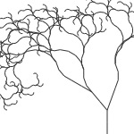
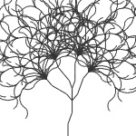
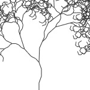
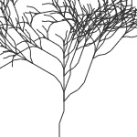
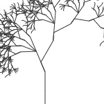

An L-system (or Lindenmayer system) is a set of rules and symbols used to model growth processes. L-systems are recursive in nature, meaning the whole is made up of smaller parts that are similar to the whole. For example, we could say that a tree is a big branch from which smaller branches sprout. Each of the smaller branches again sprouts smaller branches and so on. If we know what one branch looks like, we can model a whole tree. For an elegant environment based on recursion rules, also have a look at ContextFree.
The L-system library for PlotDevice offers an easy way to work with recursion and rulesets. It is based on code by Frederik De Bleser and Mark Meyer (also see the Dryad example and Mark Meyer’s L-system in the gallery).
Download
| L-system (5KB) Last updated for PlotDevice 1.9.3 Author: Frederik De Bleser, Mark Meyer, Tom De Smedt |
Documentation
- How to get the library up and running
- Creating a new L-system
- Growing rules
- Custom segments
- Custom commands
- Predefined tree systems
How to get the library up and running
Put the lsystem library folder in the same folder as your script so PlotDevice can find the library. You can also put it in ~/Library/Application Support/PlotDevice/.
lsystem = ximport("lsystem")
Creating a new L-system
create(angle=20, segmentlength=40, rules={}, root=None)
The create() command returns a new L-system object that will grow on the canvas from the given x and y position. The object has the following properties:
- lsystem.angle: the rotation angle used for the +
and - rule symbols.
- lsystem.segmentlength: the length or size of a single segment.
- lsystem.decrease: the decrease in segment length as the system grows (0.7 by default).
- lsystem.threshold: stop drawing segments when they get smaller than this (3.0 by default).
- lsystem.root: the starting rule to grow (rule with key ‘1’ by default).
- lsystem.rules: a dictionary of rules, the ‘DNA’ of the system.
- lsystem.commands: a dictionary of custom command symbols.
- lsystem.cost: the amount of time it costs to draw a single segment (0.25 by default).
The L-system object has two methods used for drawing:
lsystem.draw(x, y, generation, time=None, ease=None)
lsystem.segment(length, generation, time=None, id=None)
The lsystem.draw() method draws the growth pattern at the given position. The generation parameter determines how deep the pattern goes. For our tree-is-a-big-branch example, generation 3 would mean: draw a branch (1) that sprouts branches (1) who all sprout branches (3). More and more segments will be grown until there are no generations left or the segments become smaller than lsystem.threshold.
The time parameter can be used in an animation. When a segment is drawn, it chips away a bit of time equal to lsystem.cost. When time starts from zero in an animation and gradually increases, segments become bigger and more of them get drawn (as there is gradually more time to pay the cost).
A second optional parameter ease can be used to progress the rotation angle. It is usually some number between 4 and 20 you can use to ‘unfold’ the growth pattern.
The lsystem.segment() method contains the code for drawing a single segment. If you want your own custom segment (like a leaf) you need to redefine this method. We’ll have a look at that later on.
lsystem.segments(generation, time=None)
lsystem.duration(generation)
The lsystem.segments() method returns the number of segments grown for a given number of generations (and for a given amount of time).
The lsystem.duration() calculates the total amount of time needed to draw all the
segments, based on the current lsystem.cost.
Growing rules
The shape your L-system will take depends on its set of rules. A rule is a string of predefined symbols that each represent a transformation command (like scale() or rotate()). So a rule is a bit like a DNA-string representing a piece of PlotDevice code. Here are all the symbols:
- F : the system draws a segment here (a rectangle by default).
- f : move to the next position without drawing a segment
- + : rotate counterclockwise by lsystem.angle.
- - : rotate clockwise by lsystem.angle.
- | : rotate 180 degrees.
- [ : works like the push() command, starting a subbranch.
- ] : works like the pop() command, ending the subbranch.
- ! : reverses the rotation angle.
- ( : increases the rotation angle to 110%.
- ) : decreases the rotation angle to 90%.
- < : increases the segment length to 110%.
- > : decreases the segment length to 90%.

|
Let’s try out some of the symbols! Here the rule is simply: ‘draw three segments’. tree = lsystem.create() tree.rules["1"] = "FFF" tree.draw(50, 150, 1) |

|
Draw two segments, rotate clockwise, then draw another segment:
tree = lsystem.create() tree.rules["1"] = "FF-F" tree.draw(50, 150, 1) |
Here the rule is: draw two segments, rotate clockwise, then draw the rule.
Notice how we reference the rule’s key from inside the symbol string so we can spawn
more generations. This is a typical example of recursion.
tree = lsystem.create() tree.rules["1"] = "FF-1" tree.draw(50, 150, 6) | |

|
At the point where the recursion branch occurs, rotate counterclockwise, draw a
segment, rotate counterclockwise, and draw another segment.
tree = lsystem.create() tree.rules["1"] = "FF-[1]++F+F" tree.draw(50, 150, 6) |

|
More recursion on the branches:
tree = lsystem.create() tree.rules["1"] = "FF-[1]++F+F+1" tree.draw(50, 150, 6) |

|
A more elaborate ruleset with rules for individual branches:
tree = lsystem.create(segmentlength=20) tree.rules = { "1" : "FF[-2]3[+3]", "2" : "FF+F-F-F[FFF3][+3]-F-F3", "3" : "FF-F+F+F[2][-2]+F+F2" } tree.draw(50, 150, 6) |
Custom segments
By default, the system will use rectangles connected by lines for segments. To get a new look you will have to write your own segment command. The default segment command looks like this:
def segment(self, length, generation, time=None, id=None): push() line(0, 0, 0, -length) scale(0.65) rect(-length/2, -length, length, length) pop()
An L-system uses corner-mode translate() commands to move from segment to segment. It just takes some twiddling with the length parameter to position a segment correctly. You can use the generation, time and id parameters to devise color schemes or select segment shapes.
In an animation, the time parameter is the current time when the segment is drawn. Time spreads equally through all branches. If you divide the time by lsystem.duration() you get a number from 1.0 to 0.0 which you can use as an alpha value for example.
The id parameter is a number from 0 to lsystem.segments(). Since it is different for each individual segment, you could use it to select a different image at each segment (like here for example).
Now let’s define our own segment command!
size(550, 400) lsystem = ximport("lsystem") tree = lsystem.create() # We'll import the Colors library to do shadows # and a nice gradient background. colors = ximport("colors") clr = colors.rgb(0.1, 0.095, 0.075) p = rect(0, 0, WIDTH, HEIGHT, draw=False) colors.gradientfill(p, clr, clr.lighten(0.25)) # Use the Supershape library to create an organic segment. w = h = 65 supershape = ximport("supershape") leaf = supershape.path(0, 0, w, h, 3, 0.22, 0.4, 0.4) # What's the total amount of time we need to draw 8 generations? # We can then divide the time for each segment by this number # to get a value from 1.0 down to 0.0 generations = 8 done = tree.duration(generations) # Here's our own segment function. # We'll use the relative time to individually color segments # (as time progresses we adjust the opacity). def segment(length, generation, time, id): time /= done colors.shadow(dx=0, dy=-10-10*time, alpha=time*0.2) fill(0.9, 0.9, 0.9, 0.4*time) push() rotate(90) scale(time+0.3) drawpath(leaf.copy()) pop() tree.segmentlength = w - 15 tree.segment = segment tree.draw(275, 400, generations, time=done)

To render the movie frames I can then put the tree’s drawing method inside PlotDevice’ draw() command and use the FRAME variable as progressive time for each frame:
speed(20) def draw(): background(0.22, 0.21, 0.16) tree.draw(250, 400, generations, time=FRAME*0.1, ease=5) canvas.save(str(FRAME+100)+".jpg")
Custom commands
Aside from creating your own drawing segments you can also define your own transformation rules. To accomplish this we have to add a new command symbol to the lsystem.commands dictionary and link it to a command that takes lsystem, generation, rule, angle, length and time parameters.
For example, we can extend the first example in the library download folder with a wind function that makes our plant sway a bit:
from math import sin def wind(lsystem, generation, rule, angle, length, time): d = sin(FRAME*0.1) * 2 rotate(d) tree.commands["w"] = wind
Here we defined a new w symbol which we can include in our growth pattern:
tree.rules["1"] = "w[-FF-FF1][+FF+FF1]"
Predefined tree systems
The library includes a number of predefined tree systems with interesting rulesets for you to play around with. Below is a short overview. There are many other things that can be modelled with L-systems besides trees. The growth pattern is only limited to your own creativity. Check the Penrose tiling example in the library folder for example.
|  |
tree = lsystem.gnarled() tree.draw(300, 400, 7) ’1’ : ‘FF[++FF[2][+FF2]][-FF3]’ |

|
tree = lsystem.tall() tree.draw(300, 400, 7) ’1’ : ‘FF[-2][3][+3]’ |
|  |
tree = lsystem.great() tree.draw(300, 400, 7) ’1’ :
‘F-F+F[++2][F+2][F-2][--2]’ |
|  |
tree = lsystem.old() tree.draw(300, 400, 7) ’1’ :
‘F-F+F+F[(+2]-FF-F[(-2](2’ |
|  |
tree = lsystem.crooked() tree.draw(300, 400, 6) ’1’ : ‘F-F+2’ |
|  |
tree = lsystem.slender() tree.draw(300, 400, 7) ’1’ : ‘FFF+[2]F+(>[---1]’ |

|
tree = lsystem.strong() tree.draw(300, 400, 7) ’1’ : ‘FFF-[-F+F[2]-[1]]+[+F+F[1]-[1]]’ |